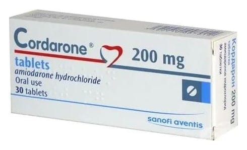

Cordarone 200 mg Bölünebilir Tablet, 30 Adet

Ne için kullanılır
KT · Bölüm 1CORDARONE’un etkin maddesi amiodaron hidroklorürdür. 1 bölünebilir tablet içinde 200 mg amiodaron hidroklorür içerir. CORDARONE tabletler bir tarafında 200 yazısı ve kalp şekli, diğer tarafı çentikli olan yuvarlak ve beyaz ila soluk krem renkli tabletlerdir. Otuz bölünebilir tablet içeren blister ambalajda kullanıma sunulmuştur. Çentik çizgisi sadece yutma kolaylığı sağlamak amacıyla tableti kırmayı kolaylaştırmak içindir, eşit dozlara bölmek için değildir. Piyasada ayrıca ampul formu da bulunmaktadır. CORDARONE antiaritmik adı verilen ve kalp ritmindeki bozuklukların tedavisinde kullanılan bir ilaçtır. Kalp ritminizin düzensiz olması (aritmi) gibi durumları kontrol ederek etki gösterir. Tabletleri almak kalp atışınızı normale döndürmeye yardımcı olur.
CORDARONE aşağıdaki nedenlerden biri veya birkaçı dolayısıyla veriliyor olabilir:
Diğer ilaçların etki etmediği veya kullanılamadığı düzensiz kalp atımlarını tedavi etmek için "Atriyal çarpıntı" veya "atriyal fibrilasyon" olarak bilinen kalbinizin aşırı hızlı atması ile seyreden durumlarda kalpte ritim bozukluğunuzu tedavi etmek için . CORDARONE sadece diğer ilaçlar kullanılamadığında kullanılmalıdır.
Wolff-Parkinson White sendromu adı verilen belirgin ritim ve dolaşım bozukluğuna bağlı kalp atımının hızlanmasını tedavi etmek için aniden meydana gelebilen ve düzensiz olabilen kalp atım ritmini tedavi etmek için kullanılır. CORDARONE sadece diğer ilaçlar kullanılamadığında kullanılmalıdır.